5 chapters · 10 challenges · ACARA-aligned · Year 4
🎙️ Narrated Edition
Narrated by George · Jake voiced by Andrew · Phantom voiced by River
Chapter 1 of 5
⭐ 0 / 10
🚀 Chapter 1 — The Race Begins
Number Line Station Is in Chaos!
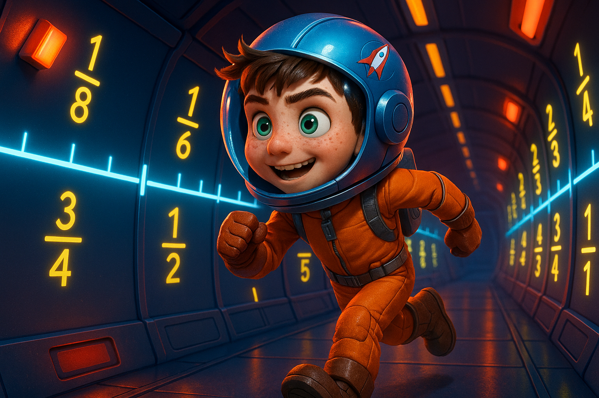
Press ▶ to hear the story
Number Line Station was unlike anything Jake had ever seen — a space station shaped like a ruler, a kilometre long, with fraction markers glowing on the walls from zero to one. And right now, every single marker was in the wrong place.
"The Phantom has moved 1/2 to where 3/4 should be! If ships navigate by these signals, they'll miscalculate their distances. I have to fix this — fast."
🔒 Listen to the story first to unlock your mission!
🔁 Warm-UpNumber · Year 4
🔢
Y4 Warm-Up — Number Line
The Phantom moved the 1/2 marker to where 3/4 should be.
Where should 1/2 actually sit on the number line from 0 to 1?
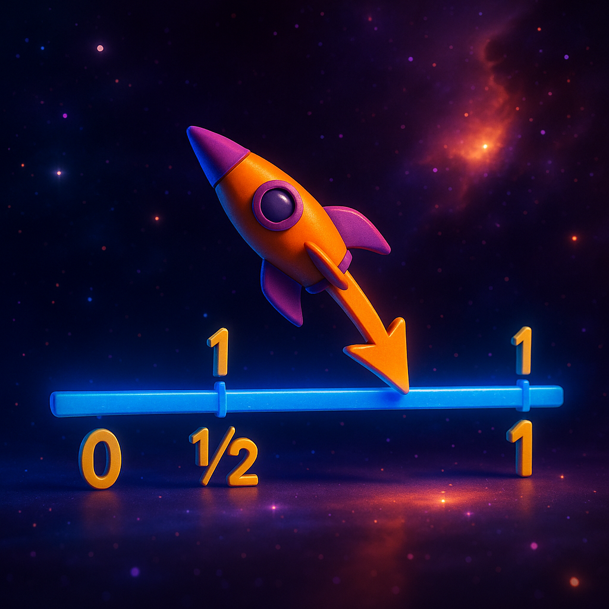
Press ▶ to continue the story
Jake sprinted down the corridor, checking markers one by one. The 1/4 marker was misplaced. The 3/4 marker was completely missing. Three ships were relying on these signals right now.
🔒 Listen to the story to unlock this challenge!
⭐ EasyNumber · Year 4
📏
Y4 Question 2 — Placing 1/4
Where should 1/4 sit on a number line from 0 to 1?
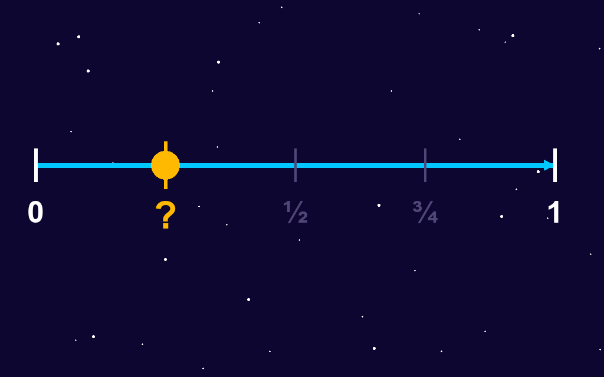
🔧 Chapter 2 — Fixing the Markers
Jake Restores the Fractions!
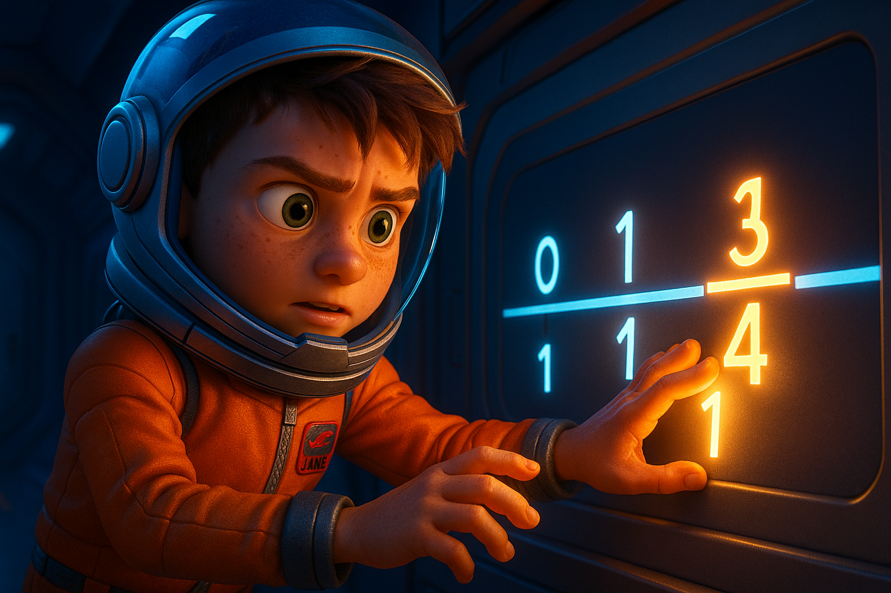
Press ▶ to hear the story
Jake replaced the markers, one by one. But then he reached a tricky section — 2/3 and 3/4, placed almost identically by the Phantom.
"2 thirds versus 3 quarters. They look close — but which one is actually larger? I need to be precise here. One wrong signal and a ship crashes."
🔒 Listen to the story first to unlock your mission!
⭐ EasyNumber · Year 4
🔧
Y4 Question 3 — Comparing Fractions
Which is larger — 2/3 or 3/4? Place them correctly on the number line.
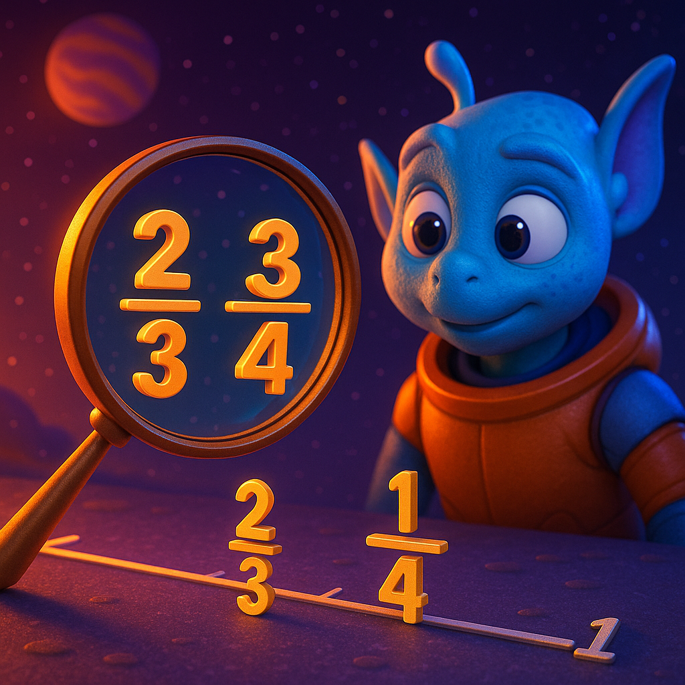
Press ▶ to continue the story
The thirds section of the number line had been completely scrambled. Jake needed to restore it — and notice something important about how thirds divide a line.
🔒 Listen to the story to unlock this challenge!
⭐⭐ MediumNumber · Year 4
⚖️
Y4 Question 4 — Placing Thirds
Place 1/3 and 2/3 on the number line.
What do you notice about the gaps between 0, 1/3, 2/3, and 1?
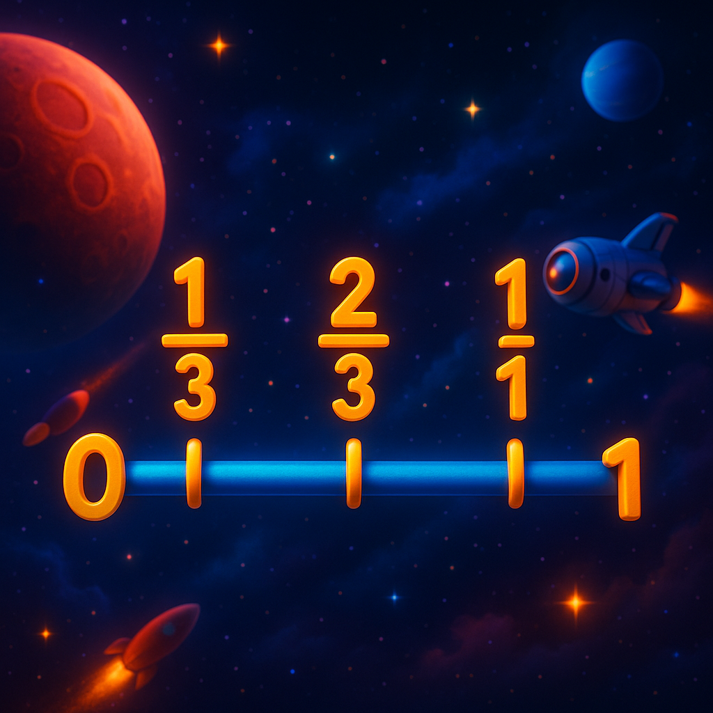
👻 Chapter 3 — The Phantom Speaks
Thirds and Improper Fractions Ahead!
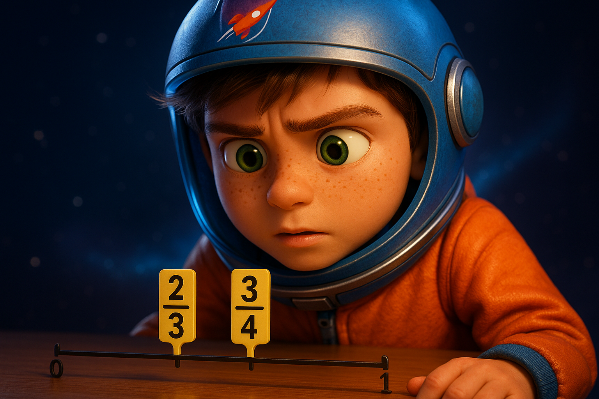
Press ▶ to hear the story
The Phantom's voice crackled through the station intercom. It had been watching.
"You fix my corrections. But you have not considered: what lies beyond 1? I have added my own markers there. Markers for fractions that are MORE than one whole."
🔒 Listen to the story first to unlock your mission!
⭐⭐ MediumNumber · Year 4
👻
Y4 Question 5 — Beyond 1!
The Phantom has placed 5/4 on the number line.
Where does 5/4 sit — is it between 0 and 1, or between 1 and 2?
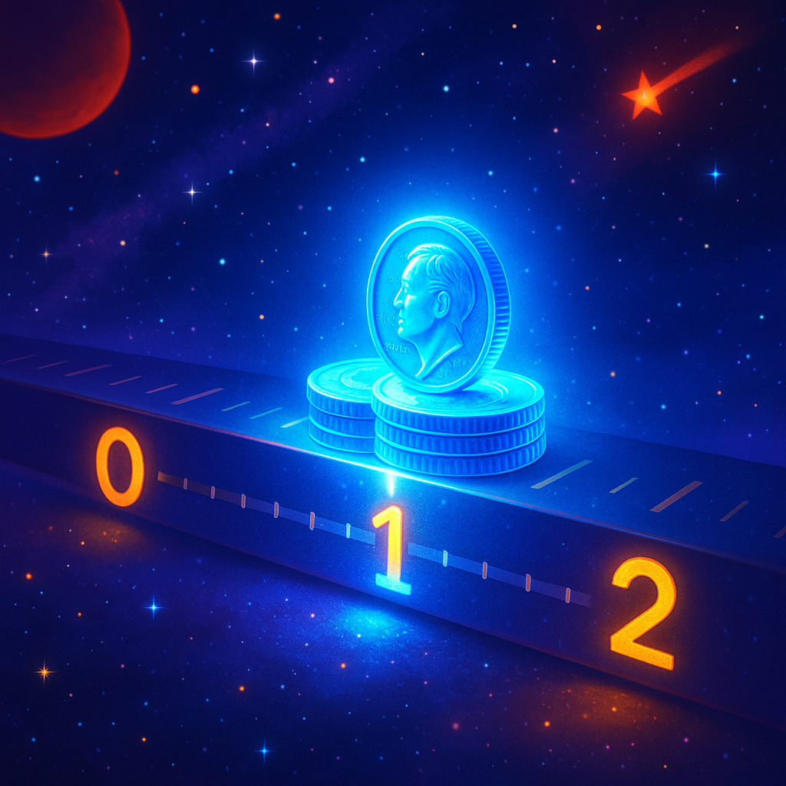
Press ▶ to continue the story
The Phantom's new markers introduced something Jake hadn't seen before — fractions greater than one, written as improper fractions and as mixed numbers.
"5 quarters equals 1 and 1 quarter. So it sits just past the 1 mark. That actually makes sense..."
🔒 Listen to the story to unlock this challenge!
⭐⭐ MediumNumber · Year 4
🌟
Y4 Question 6 — Mixed Numbers
Write 5/4 as a mixed number.
How many whole numbers and how many quarters?
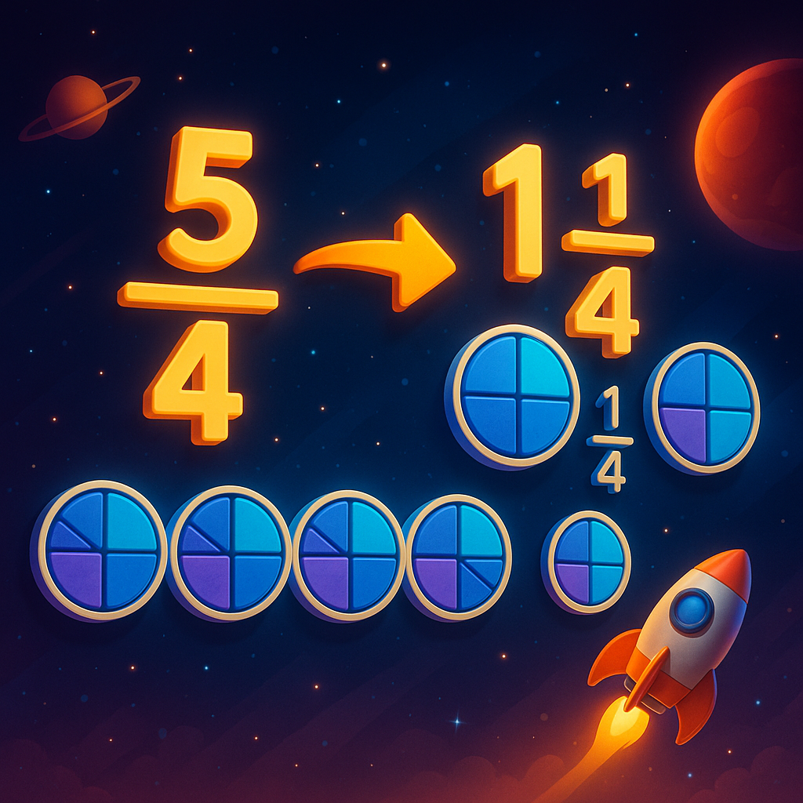
🌟 Chapter 4 — Beyond One!
Mixed Numbers and the Extended Line!
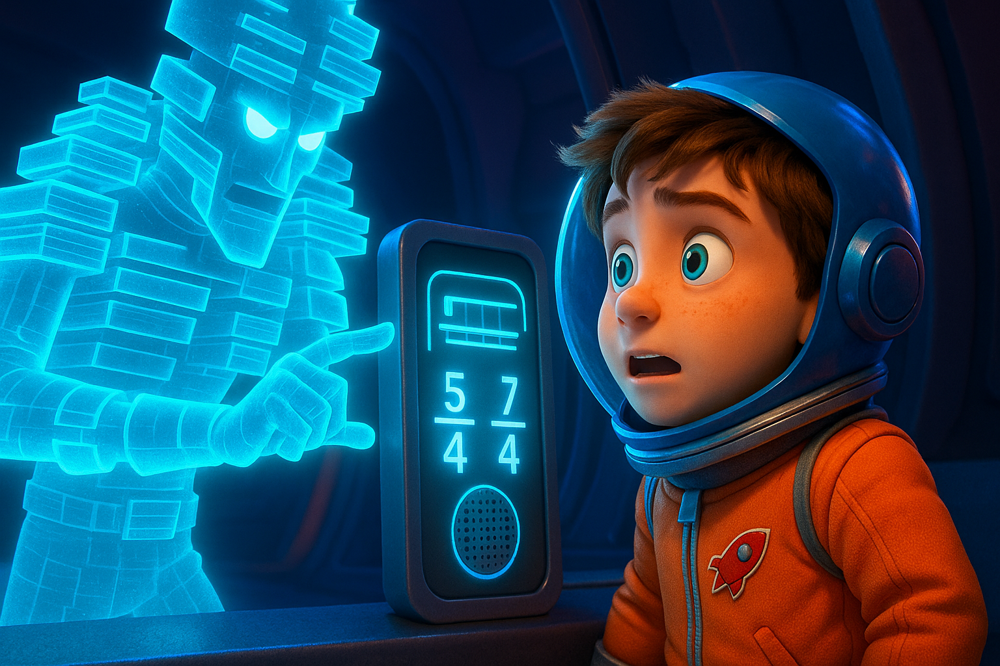
Press ▶ to hear the story
Jake had to order four fractions and place them correctly on the extended number line — from 0 all the way to 2.
🔒 Listen to the story first to unlock your mission!
⭐⭐ MediumNumber · Year 4
🔄
Y4 Question 7 — Ordering Fractions
Order these fractions from SMALLEST to LARGEST:
3/4 · 5/4 · 1/2 · 7/4
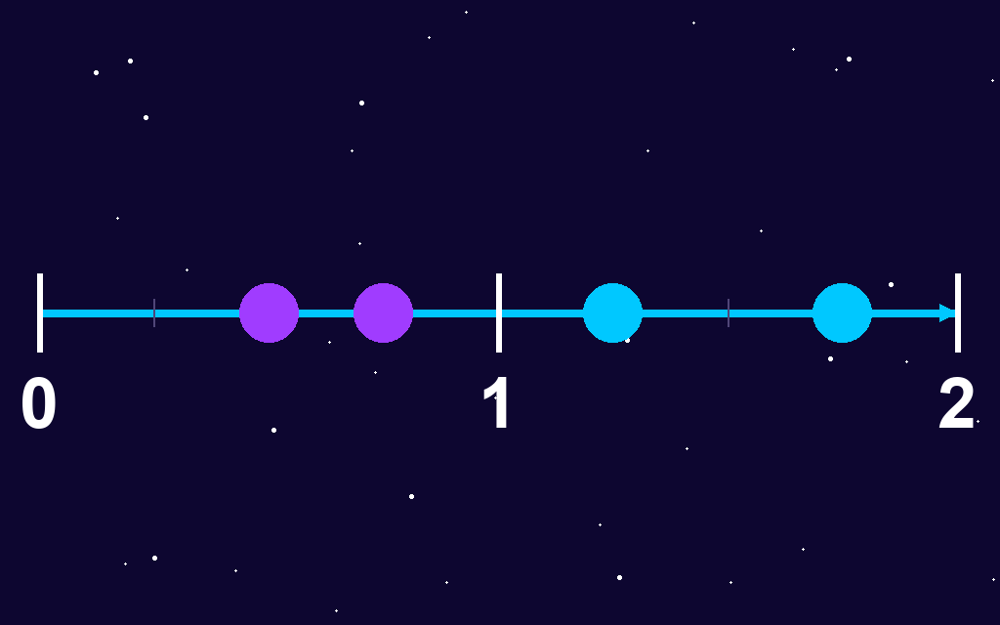
Press ▶ to continue the story
With all markers fixed, Jake ran the final check — counting from 0 to 2 in steps of 1/4.
🔒 Listen to the story to unlock this challenge!
⭐⭐⭐ HardNumber · Year 4
📊
Y4 Question 8 — Counting in Quarters
Count from 0 to 2 in steps of 1/4.
How many steps are there in total (not counting 0)?
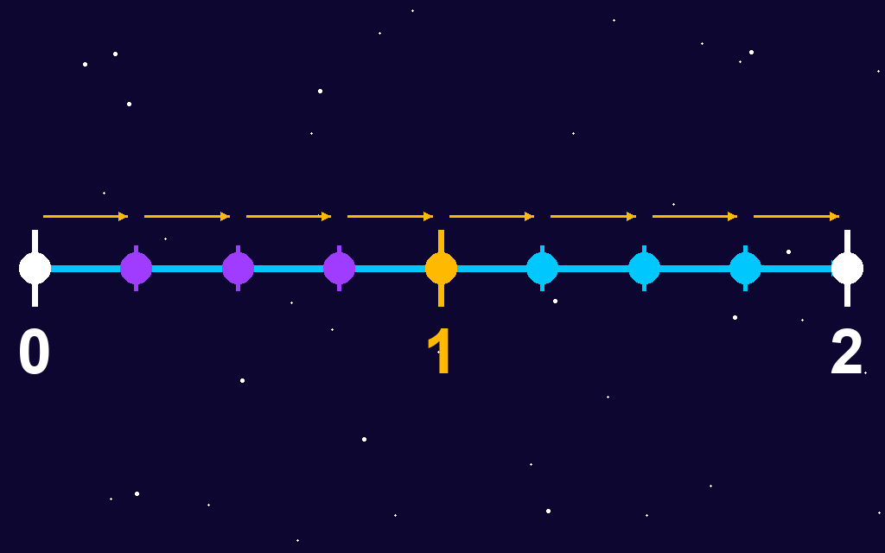
🎯 Chapter 5 — The Missing Marker
The Phantom's Last Puzzle — Ships Are Safe!
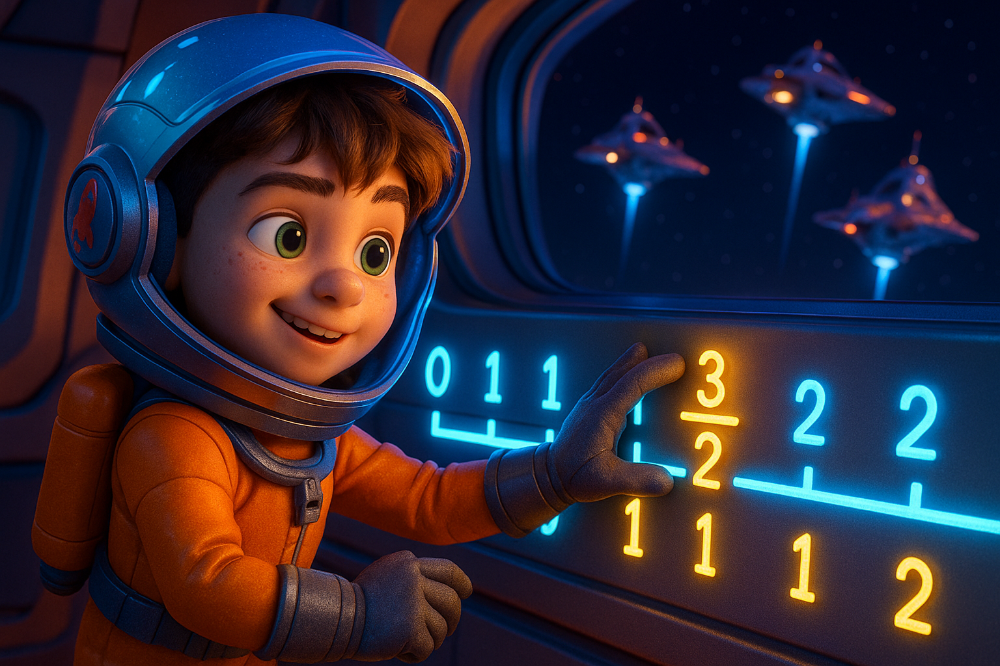
Press ▶ to hear the story
Jake fixed the last marker — and the three ships' navigation signals corrected instantly. Crisis averted. But the Phantom had left one final puzzle on the station wall, written in glowing blue light.
"I removed the marker between 3 quarters and 5 quarters because it is NOT a fraction. It is a whole number. Tell me: what marker did I remove — and am I correct?"
🔒 Listen to the story first to unlock your mission!
⭐⭐⭐ HardNumber · Year 4
🎯
Y4 Question 9 — The Missing Fraction
What fraction sits between 3/4 and 5/4 on the number line?
Is it a fraction, a whole number — or both?
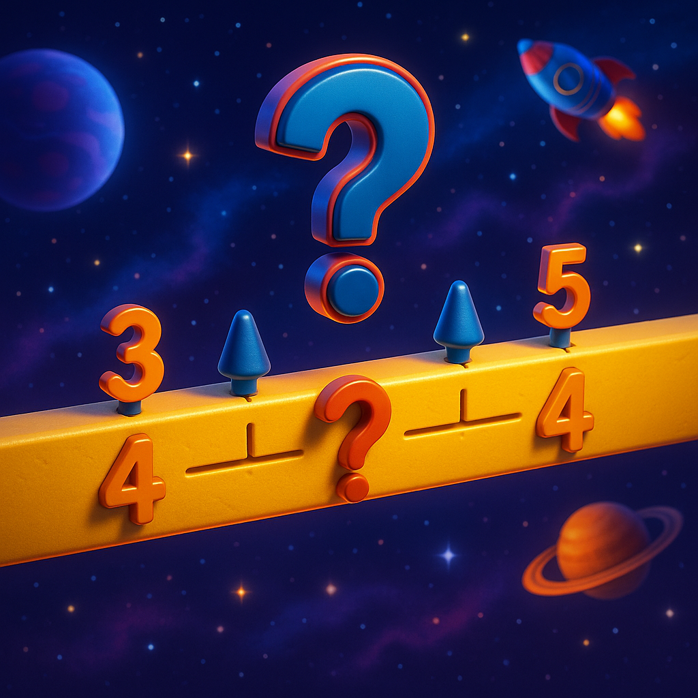
Press ▶ to continue the story
The Phantom had left a final message before vanishing.
"You understand the number line. Then come find me at the Fraction Fair. If you reach me, I will listen."
🔒 Listen to the story to unlock the Boss Challenge!
👑 Boss ChallengeNumber · Year 4
👑
Y4 Question 10 — BOSS: The Missing Marker
The Phantom removed 4/4 from the number line because it said: "1 is a whole number, not a fraction."
What is 4/4 as a whole number — and is the Phantom right?
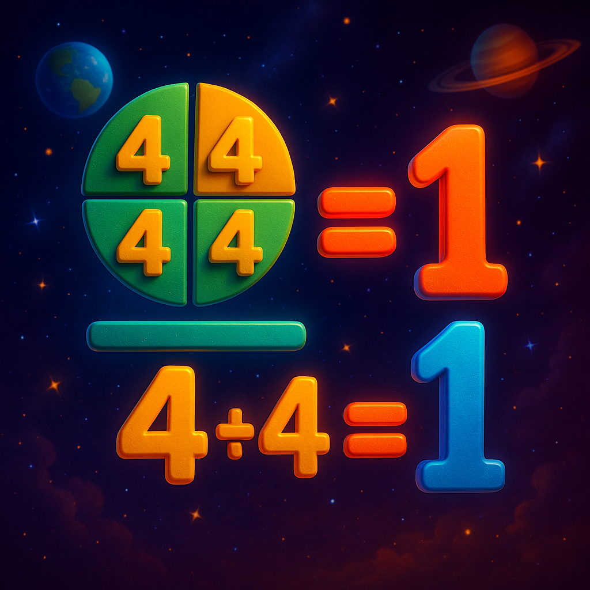
📖 Issue #4 — Cliffhanger
The Fraction Phantom Leaves a Message
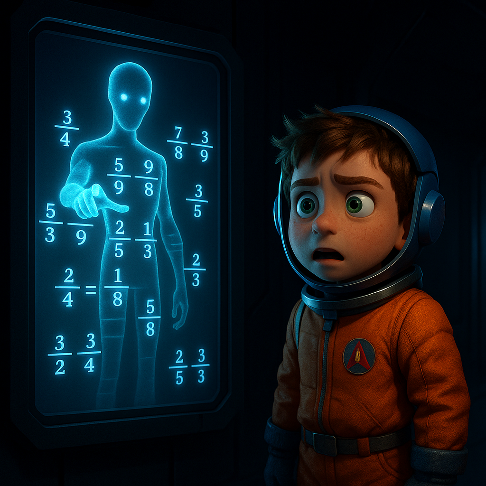
Jake stared at the empty intercom panel. The Phantom had vanished — but it had left something behind.
Written in glowing fraction light on the station wall:
"I removed 4/4 because 1 is not a fraction. It is a whole. Come find me at the Fraction Fair."
Jake read it twice. The Phantom's logic was wrong — he knew that now. But it wasn't being careless. It was being precise. It genuinely believed it was right.
Somewhere out in the galaxy, a travelling space carnival was running on fractions — and the Phantom was there, waiting.
Issue #5 — Showdown at the Fraction Fair! 🎡
🏆
MISSION COMPLETE!
You scored 10 / 10!
⭐⭐⭐
Jake fixed every marker on Number Line Station — three ships are safe, and it was all thanks to YOU! 🔢
What You Mastered Today 🧠
✅ Fractions on a Number Line — placing 1/4, 1/2, 3/4 (Number, Year 4)
✅ Comparing Fractions — 2/3 vs 3/4 using common denominators (Number, Year 4)
✅ Improper Fractions — 5/4 and 7/4 beyond the number 1 (Number, Year 4)
✅ Mixed Numbers — 5/4 = 1¼ (Number, Year 4)
✅ Boss — 4/4 = 1: fractions connect to whole numbers
Issue #5 coming next — Showdown at the Fraction Fair! The Phantom has built a whole fractional economy and Jake must WIN the challenges to reach its control terminal! 🎡
📋 Parent Guide — Issue #4
Mission: Math Blast · For parents of kids aged 7–10
What We Covered
Topic
Strand
Year
Question
Number line — placing 1/2
Number
Year 4
Q1
Number line — placing 1/4
Number
Year 4
Q2
Number line — placing 3/4
Number
Year 4
Q3
Comparing fractions — 2/3 vs 3/4
Number
Year 4
Q4
Thirds — equal spacing on number line
Number
Year 4
Q5
Improper fractions — 5/4 beyond 1
Number
Year 4
Q6
Improper to mixed number — 5/4 = 1¼
Number
Year 4
Q7
Ordering fractions > and < 1
Number
Year 4
Q8
Counting in quarters to 2
Number
Year 4
Q9
4/4 = 1: fractions and whole numbers
Number
Year 4
Q10 👑
✨ Narrated Edition
Read aloud by George (narrator), Andrew (Jake), and River (Fraction Phantom). Questions unlock after each story segment.
🔑 Key Insight
4/4 = 1 is a profound idea: whole numbers are fractions too. Every whole number can be written as a fraction (1 = 2/2 = 4/4 = 8/8). This bridges the number line.
💬 Conversation Starters
After Q4: "Is 2/3 or 3/4 of a pizza bigger? How could we check by folding paper?"
After Q6–7: "If 4/4 = 1, what does 8/4 equal? What about 12/4? Can you keep going?"
After Q10 (boss): "Why do you think the Phantom thought 4/4 wasn't a fraction? Was it partly right?"
Mission: Math Blast · ACARA Australian Curriculum v9.0 · mathblast.com.au